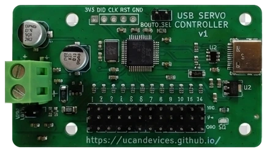
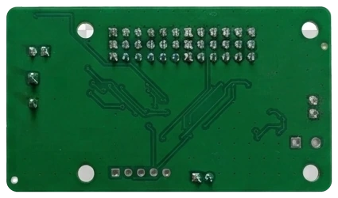
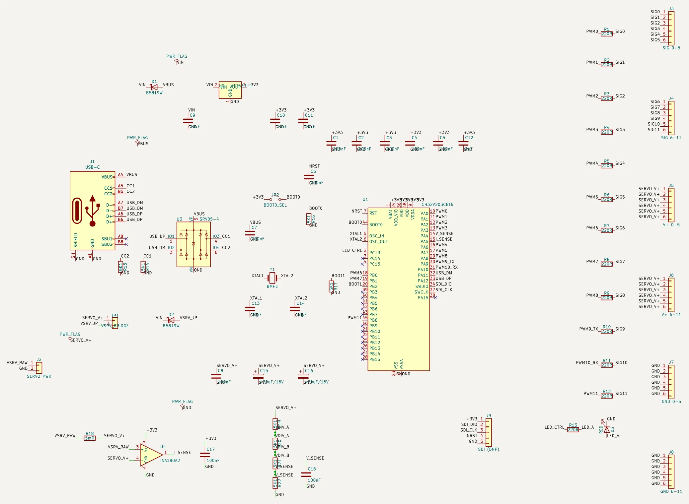

Drive 12 hobby servos from a PC over USB-C. Watches the servo supply and runs scripts on its own.
Ask about availability Source on GitHub
Product and its documentation is supplied on an as-is basis and no warranty as to their suitability for any particular purpose is either made or implied. Producer will not accept any claim for damages howsoever arising as a result of use or failure of this product. This product is not intended for use in any medical appliance, device or system in which the failure of the product might reasonably be expected to result in personal injury.
12-channel RC servo controller, an open alternative to the Pololu Mini Maestro 12 that speaks its serial protocols – with USB-C and rail monitoring added. Shows up as a virtual COM port; use Maestro libraries or simple text commands.
maestro.py, ROS drivers…) work unchanged. Maestro Control Center is not supported.

How a hobby servo is driven, and the controller running a real servo.
USB-C with ESD protection, 3.3 V LDO, CH32V203 MCU, 220 Ω series resistors on every servo signal, and an INA180 shunt amplifier plus divider for rail current and voltage.

Click to enlarge. Two-layer board, all parts on the top side, designed in KiCad. Schematic, PCB, firmware and tools: GitHub.
The board has its own USB bootloader, so updates need no programmer and no jumper.
One file, no install, for Windows and Linux. Also runs without a board (--mock) for trying things out.
Click a screenshot to enlarge.
Windows (x64)
Linux (x64) – add your user to the dialout group for serial access
Firmware 0.4 – application image, for the GUI's Firmware tab
Firmware 0.4, full image – bootloader + application, for a blank chip or recovery
All releases on GitHub
Python library and command-line tool, a script compiler for on-board scripts, and an MCP server that lets an AI agent drive the servos. Any serial terminal works too, e.g. send S 0 1500 to centre channel 0.